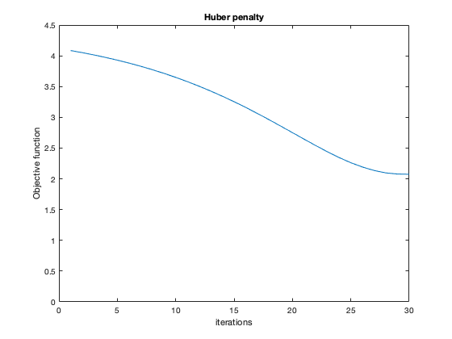

Contents
This is the main script running all the models with tuned
hyperparameter values. The tuning part can be found in a seperate
script called Hyperparameter_Optimization.m
clear;
load('../data/assignmentImageDenoisingPhantom.mat');
Part A - Initial RRMSE
rrmse = RRMSE(imageNoiseless,imageNoisy);
disp('RRMSE between the noisy and noiseless images is:');
disp(rrmse);
disp('---------------------------');
RRMSE between the noisy and noiseless images is:
0.2986
---------------------------
Part B - Results
MRF prior: Quadratic function
disp('Results with a Quadratic prior and Rician noise model');
best_alpha = 0.9602;
denoised_quad = Rician_Quad_Grad_Descent(imageNoisy,best_alpha,30,0);
rrmse = RRMSE(imageNoiseless,denoised_quad);
disp('RRMSE at optimum alpha');
disp(rrmse);
denoised = Rician_Quad_Grad_Descent(imageNoisy,1,30,0);
rrmse = RRMSE(imageNoiseless,denoised);
disp('RRMSE at alpha = 1 since 1.2*a is >1');
disp(rrmse);
denoised = Rician_Quad_Grad_Descent(imageNoisy,0.7682,30,0);
rrmse = RRMSE(imageNoiseless,denoised);
disp('RRMSE at 0.8*alpha');
disp(rrmse);
disp('---------------------------');
MRF prior: Huber function
best_alpha = 0.9997;
best_gamma = 1.6975e-04;
disp('Results with a Huber prior and Rician noise model');
denoised_huber = Rician_Huber_Grad_Descent(imageNoisy,[best_alpha,best_gamma],30,0);
rrmse = RRMSE(imageNoiseless,denoised_huber);
disp('RRMSE at optimum alpha and gamma');
disp(rrmse);
denoised = Rician_Huber_Grad_Descent(imageNoisy,[1,best_gamma],30,0);
rrmse = RRMSE(imageNoiseless,denoised);
disp('RRMSE at alpha = 1 since 1.2*a is >1 and optimum gamma');
disp(rrmse);
denoised = Rician_Huber_Grad_Descent(imageNoisy,[0.8*best_alpha,best_gamma],30,0);
rrmse = RRMSE(imageNoiseless,denoised);
disp('RRMSE at 0.8*alpha and optimum gamma');
disp(rrmse);
denoised = Rician_Huber_Grad_Descent(imageNoisy,[best_alpha,1.2*best_gamma],30,0);
rrmse = RRMSE(imageNoiseless,denoised);
disp('RRMSE at optimum alpha and 1.2*gamma');
disp(rrmse);
denoised = Rician_Huber_Grad_Descent(imageNoisy,[best_alpha,0.8*best_gamma],30,0);
rrmse = RRMSE(imageNoiseless,denoised);
disp('RRMSE at optimum alpha and 0.8*gamma');
disp(rrmse);
disp('---------------------------');
MRF prior: Discontinuity-Adaptive function
disp('Results with a Adaptive-Discontinuity prior and Rician noise model');
best_alpha = 0.9825;
best_gamma = 9.7881;
denoised_disc = Rician_Disc_Grad_Descent(imageNoisy,[best_alpha,best_gamma],30,0);
rrmse = RRMSE(imageNoiseless,denoised_disc);
disp('RRMSE at optimum alpha and gamma');
disp(rrmse);
denoised = Rician_Disc_Grad_Descent(imageNoisy,[1,best_gamma],30,0);
rrmse = RRMSE(imageNoiseless,denoised);
disp('RRMSE at alpha = 1 since 1.2*a is >1 and optimum gamma');
disp(rrmse);
denoised = Rician_Disc_Grad_Descent(imageNoisy,[0.8*best_alpha,best_gamma],30,0);
rrmse = RRMSE(imageNoiseless,denoised);
disp('RRMSE at 0.8*alpha and optimum gamma');
disp(rrmse);
denoised = Rician_Disc_Grad_Descent(imageNoisy,[best_alpha,1.2*best_gamma],30,0);
rrmse = RRMSE(imageNoiseless,denoised);
disp('RRMSE at optimum alpha and 1.2*gamma');
disp(rrmse);
denoised = Rician_Disc_Grad_Descent(imageNoisy,[best_alpha,0.8*best_gamma],30,0);
rrmse = RRMSE(imageNoiseless,denoised);
disp('RRMSE at optimum alpha and 0.8*gamma');
disp(rrmse);
disp('---------------------------');
Results with a Quadratic prior and Rician noise model
RRMSE at optimum alpha
0.3525
RRMSE at alpha = 1 since 1.2*a is >1
0.3654
RRMSE at 0.8*alpha
0.4726
---------------------------
Results with a Huber prior and Rician noise model
RRMSE at optimum alpha and gamma
0.2317
RRMSE at alpha = 1 since 1.2*a is >1 and optimum gamma
0.2383
RRMSE at 0.8*alpha and optimum gamma
0.7993
RRMSE at optimum alpha and 1.2*gamma
0.2323
RRMSE at optimum alpha and 0.8*gamma
0.2327
---------------------------
Results with a Adaptive-Discontinuity prior and Rician noise model
RRMSE at optimum alpha and gamma
0.3606
RRMSE at alpha = 1 since 1.2*a is >1 and optimum gamma
0.3722
RRMSE at 0.8*alpha and optimum gamma
0.6174
RRMSE at optimum alpha and 1.2*gamma
0.3638
RRMSE at optimum alpha and 0.8*gamma
0.3666
---------------------------
Part C - JET Colormaps
myNumOfColors = 200;
myColorScale = [ [0:1/(myNumOfColors-1):1]' , ...
[0:1/(myNumOfColors-1):1]' , [0:1/(myNumOfColors-1):1]' ];
figure;
imagesc (single (imageNoiseless));
title('Noiseless Image');
colormap (myColorScale);
colormap jet;
daspect ([1 1 1]);
axis tight;
colorbar;
figure;
imagesc (single (imageNoisy));
title('Noisy Image');
colormap (myColorScale);
colormap jet;
daspect ([1 1 1]);
axis tight;
colorbar;
figure;
imagesc (single (denoised_quad));
title('Image denoised using quadratic prior');
colormap (myColorScale);
colormap jet;
daspect ([1 1 1]);
axis tight;
colorbar;
figure;
imagesc (single (denoised_huber));
title('Image denoised using Huber prior');
colormap (myColorScale);
colormap jet;
daspect ([1 1 1]);
axis tight;
colorbar;
figure;
imagesc (single (denoised_disc));
title('Image denoised using discontinuity-adaptive prior');
colormap (myColorScale);
colormap jet;
daspect ([1 1 1]);
axis tight;
colorbar;
save('../results/denoised_quad.mat',"denoised_quad");
save('../results/denoised_disc.mat',"denoised_disc");
save('../results/denoised_huber.mat',"denoised_huber");
Part D
Objective Function (negative log likelihood) vs iterations
MRF prior: Quadratic function
best_alpha = 0.9602;
denoised_quad = Rician_Quad_Grad_Descent(imageNoisy,best_alpha,30,1);
MRF prior: Huber function
best_alpha = 0.9997;
best_gamma = 1.6975e-04;
denoised_huber = Rician_Huber_Grad_Descent(imageNoisy,[best_alpha,best_gamma],30,1);
MRF prior: Discontinuity-Adaptive function
best_alpha = 0.9825;
best_gamma = 9.7881;
denoised_disc = Rician_Disc_Grad_Descent(imageNoisy,[best_alpha,best_gamma],30,1);
